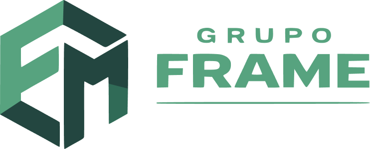

Escolha a Frame para sua jornada comercial e conte com mais de 30 anos de expertise em soluções personalizadas para o seu sucesso.
Nossa equipe realizará uma visita detalhada ao local, aproveitando sua vasta experiência e tecnologia para compreender suas necessidades comerciais de forma precisa e criar soluções sob medida.
Com uma equipe altamente qualificada e mais de 30 anos de experiência, criaremos um layout personalizado para o seu estabelecimento. O orçamento será preparado com todos os detalhes do processo, visando sua máxima conveniência.
Com materiais de ponta e uma linha de produção qualificada, garantimos a fabricação rápida e eficiente. Baseados no Rio de Janeiro, oferecemos um prazo mínimo de 30 dias, podendo ser estendido dependendo das exigências.
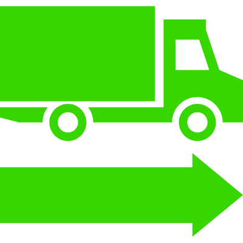
Ao concluir a fabricação de seu mobiliário, proporcionamos uma entrega eficiente, rápida e segura, abrangendo tanto o estado do Rio de Janeiro quanto outros locais. Demonstrando nosso compromisso com o seu negócio.
Venha conferir nosso mobiliário personalizado feito especialmente para instalações comerciais de alta qualidade como farmácias, petshops, mercados, perfumarias e muito mais. Aprimore seu estabelecimento conosco!
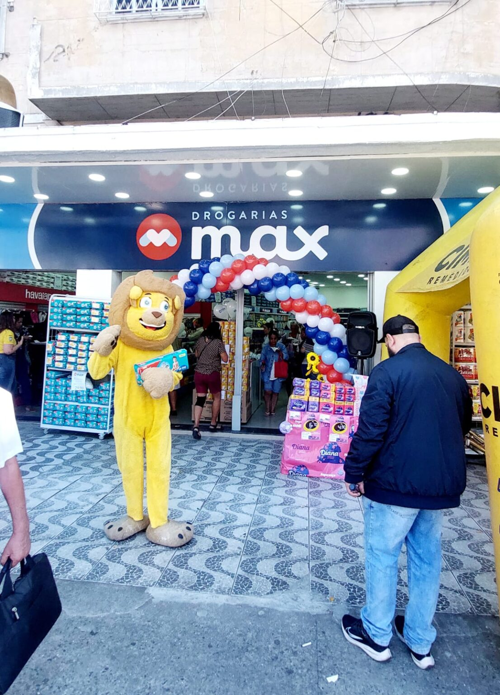


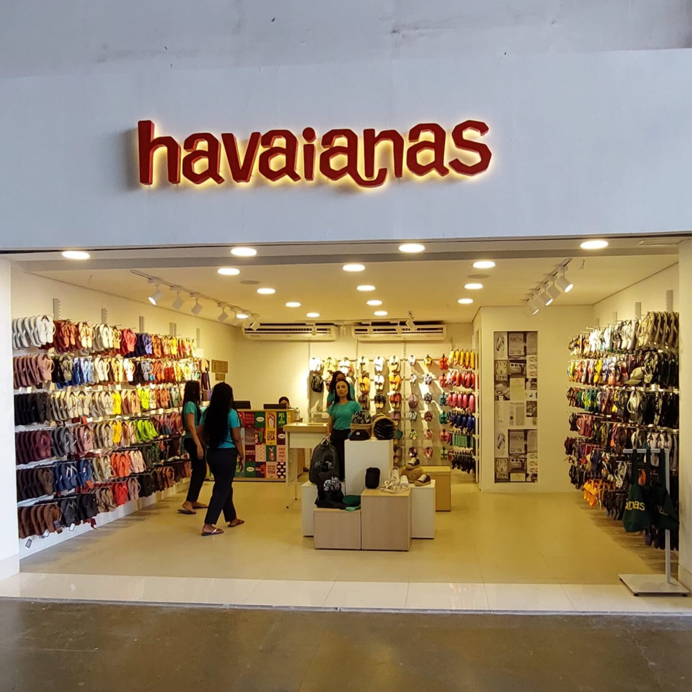
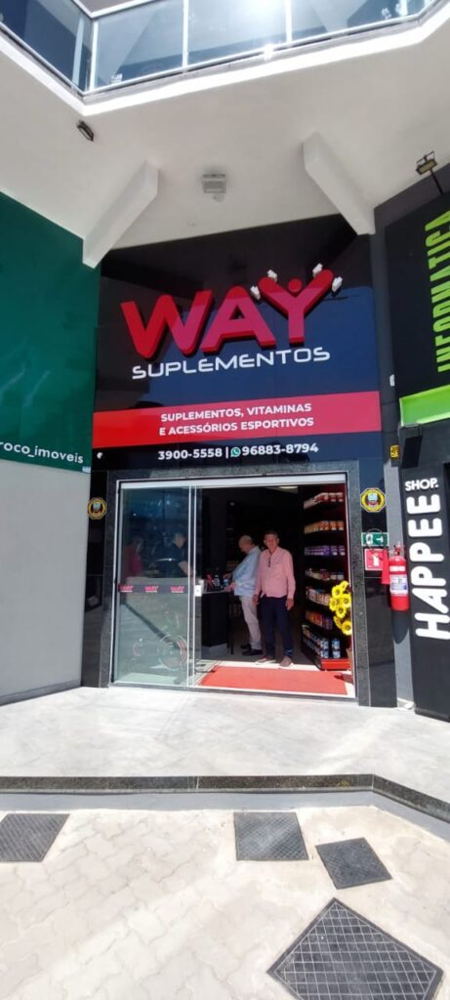
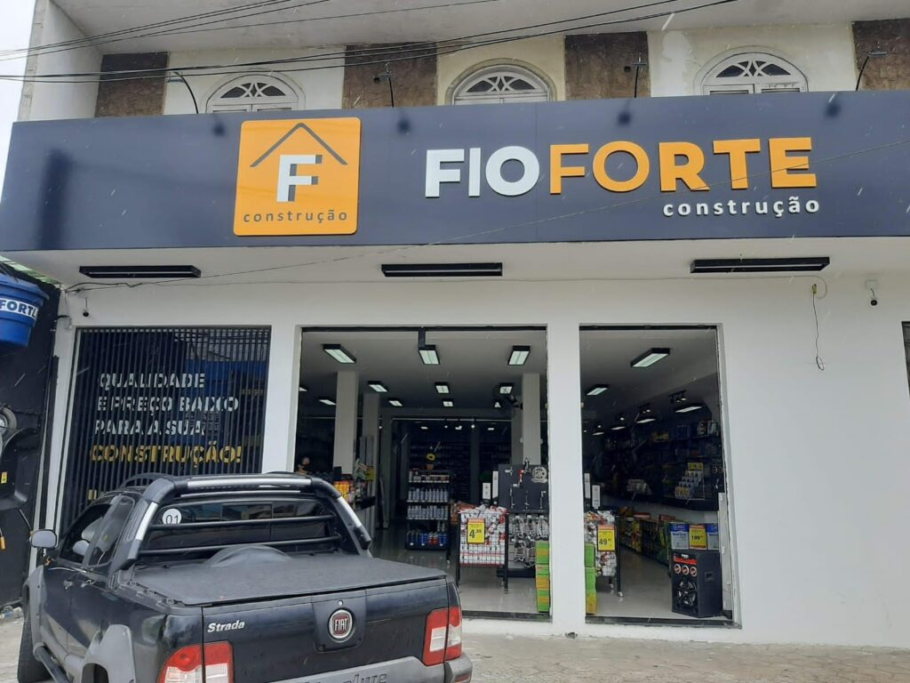
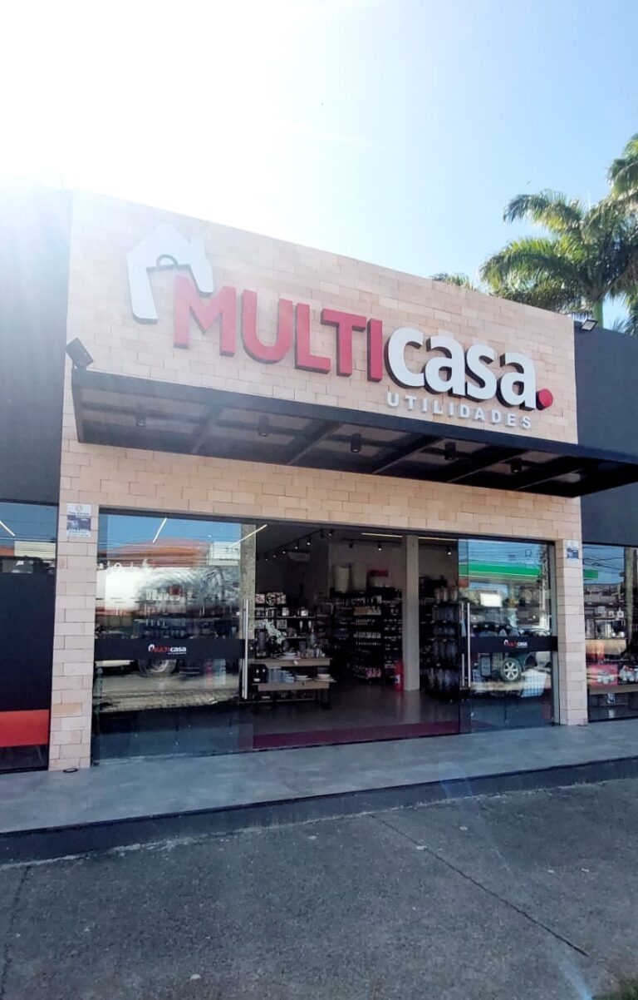
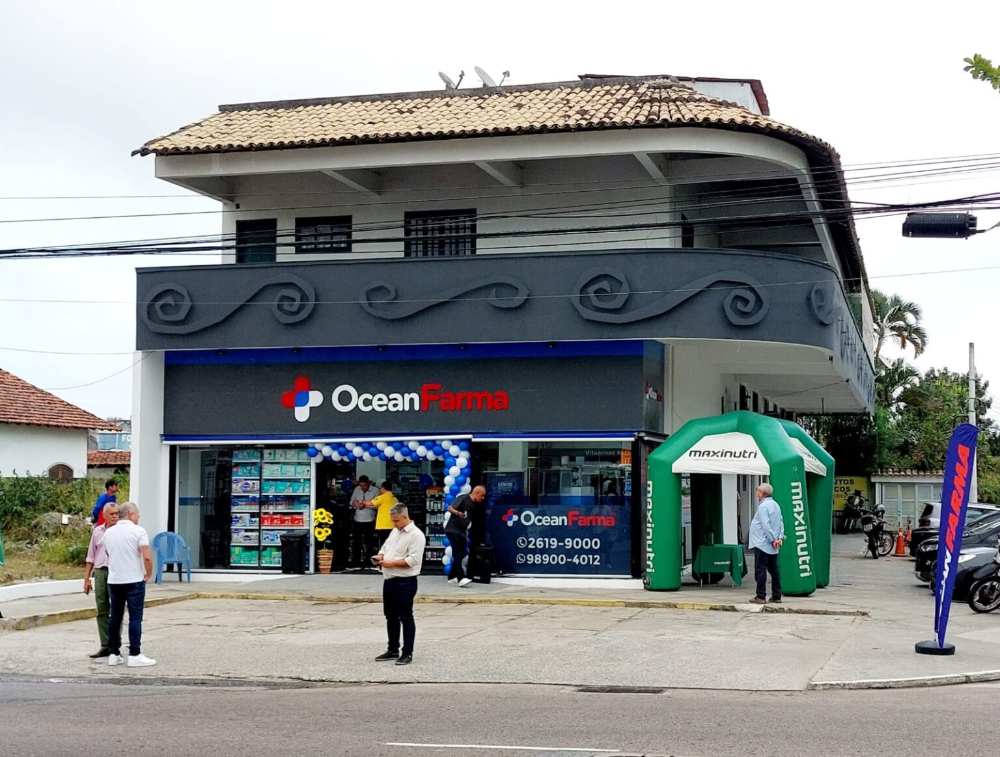
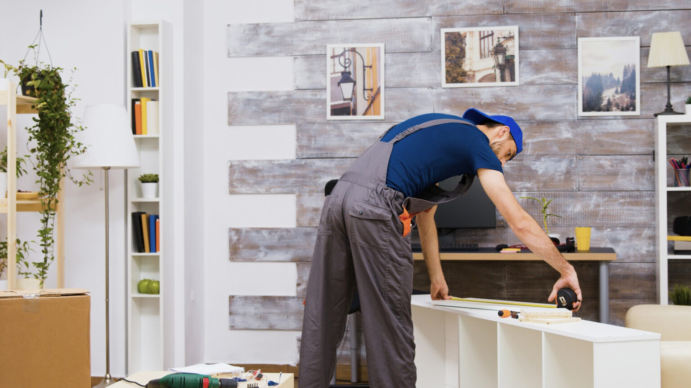
Neste artigo, vamos explorar o conceito de mobiliário de apoio em espaços comerciais, entender a importância dessas peças complementares e analisar exemplos práticos de como elas podem ser utilizadas de forma eficaz. Com exemplos fictícios, demonstraremos como os móveis de apoio, como bancas de ofertas, fraldários, cestos giratórios e porta-prospectos, podem agregar valor ao seu espaço comercial.
No mundo do varejo, a escolha do mobiliário comercial adequado desempenha um papel fundamental no...
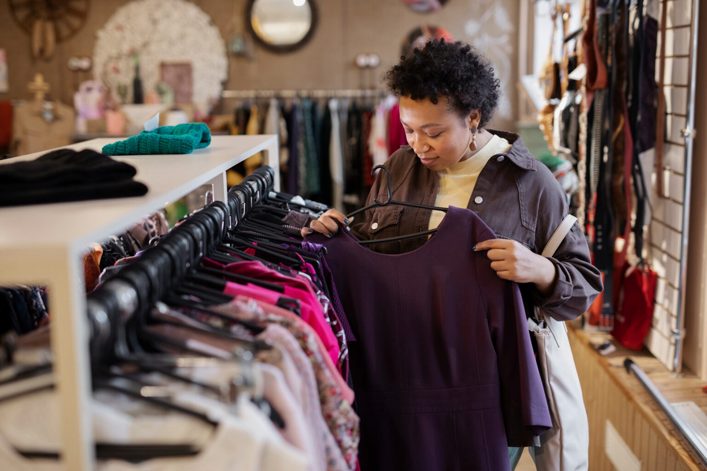
Nos últimos anos, tem-se observado um aumento na popularidade da tendência de empreender na forma...
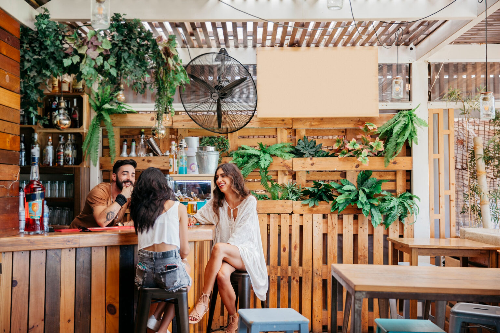
O mobiliário eco-friendly, também conhecido como mobiliário sustentável, emerge como uma tendência proeminente no universo...